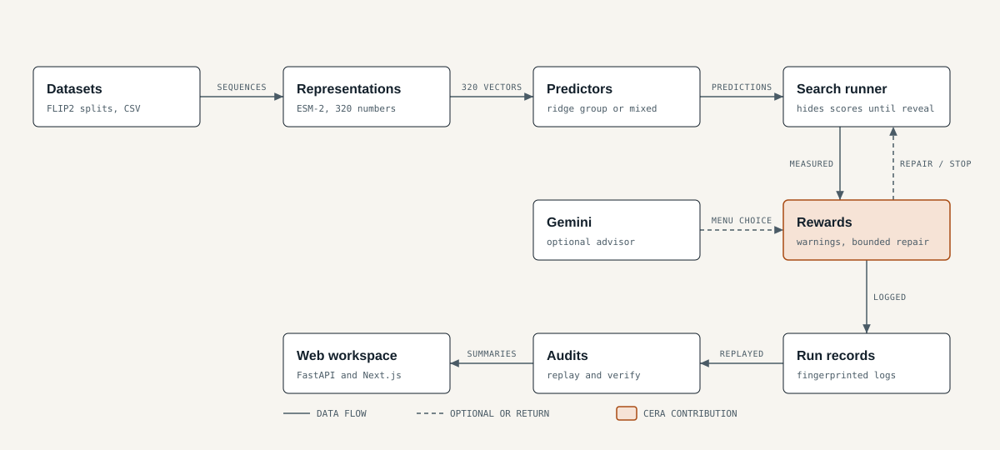

CERA project review
Counterexample-guided repair of learned rewards for protein fitness
Implementation, retrospective results and remaining evidence
Information Science and Engineering
Why a search can trust the wrong prediction
The laboratory question
A protein variant is a changed sequence of amino acids. A fitness score measures a property such as activity or stability.
Measuring many variants is expensive, so a model estimates which ones are worth measuring next.
The failure
A search that repeatedly chooses the highest predicted score can move toward sequences where its model is unreliable.
CERA studies whether recorded failures can guide a checked change to the search rule.
The CERA search loop
- SpecifyDefine a bounded reward that scores candidates.
- PredictEstimate fitness and a range using known measurements.
- SelectChoose a batch without seeing its measured scores.
- CheckReveal scores and record warnings.
- RepairTest an allowed change, keep it only if checks pass, or stop.
The reward is a scoring rule, not the measured fitness itself. Every run saves its selections, warnings and repair decisions.
Three measured landscapes
| Dataset | Local rows | Role | Important distinction |
|---|---|---|---|
| Alpha amylase | 3,706 | Development | Activity of variants of one enzyme |
| Imine reductase (IRED) | 8,586 | Evaluation | Split by number of sequence changes |
| Hydrophobic core | 24,935 | Evaluation | Three proteins analyzed separately |
The archived IRED split has 8,586 rows; the benchmark website lists 17,143 for the broader dataset. The filtering difference remains unresolved.
From a sequence to a prediction
Numerical representation
ESM-2, a protein language model, converts a sequence into 320 numbers. The project keeps this representation model fixed.
Predictor group
The main studies use five ridge regression models. Ridge regression limits the size of model weights to reduce unstable fitting.
Prediction range
Twenty reserved measured examples set a range around each prediction. Coverage is the fraction of measured scores inside those ranges.
A nominal 90% range is a target, not a guarantee when the search adaptively chooses new variants.
How the searches were compared
Each matched method starts from the same observed variants for a given seed.
The budget allows up to ten batches of ten. Repair can stop earlier.
They include random, fixed reward, repair and adapted optimization baselines.
The main four-protein comparison contains 360 runs: four proteins, ten starts and nine methods. It uses previously measured data, not new laboratory experiments.
Repair did not improve the final best score
Compared with fixed reward at each policy’s actual stop, across 40 matched starts.
Both repair policies had these counts. Fixed reward always used its full 100-measurement budget; repair frequently stopped earlier. A tie does not prove equivalence.
Results depend on the starting group
IRED: fewer changes first
Across ten starts, each repair policy had a higher best score once, tied seven times and scored lower twice than fixed reward.
Each repair policy stopped after failed repairs in all ten runs.
Hydrophobic core: lower scores first
Across 30 starts, each repair policy tied five times and scored lower 25 times than fixed reward at actual stop.
When compared at the same measurement count, all 30 pairs tied in a post-result analysis.
IRED starts included validation-marked train rows. Hydro starts were defined using measured fitness. Later choices could come from all eligible variants, so these are not official split evaluations.
Ranges covered few higher-fitness Hydro variants
Static check on held-out variants. Values are the median coverage across ten starting samples for each protein.
| Protein group | Held-out variants per run | Median coverage |
|---|---|---|
| IRED | 3,225 | 90.0% |
| Hydro P06241 | 747 | 0.0% |
| Hydro P01053 | 579 | 11.7% |
| Hydro P0A9X9 | 2,215 | 10.6% |
These are exploratory static predictions, not an active-search repair result or a formal coverage guarantee. The Hydro split uses score-derived membership.
Why many repair runs stopped
The rule-based and Gemini-assisted policies had the same count in this study.
The check was demanding
Rejected proposals failed either complete displacement of flagged candidates or the direct diversity-resolution check.
An accepted change passed the implemented checks. That alone does not show that future measurements improved.
These observations describe the implementation and recorded searches. They do not show that removing a safeguard would be safe or effective.
A mixed predictor is available for Amylase
Model
Three ridge models and two small neural networks use the existing 320-number sequence representation.
The neural networks were trained on the local GPU. A reusable development model was exported and checked against a fresh refit.
Comparison
In ten matched Amylase searches with no repair, the mixed group and five-ridge group ended with the same best score in all ten pairs.
They could choose different variants. The result does not establish equivalence or superiority.
A later static check covers held-out IRED and Hydro variants; mixed-predictor search and laboratory use remain unvalidated.
What the local workspace can do
Prepare and run
- Browse the dataset catalog.
- Compile and review a bounded goal with Gemini, optionally.
- Run local searches across the primary protein groups.
- Predict eligible Amylase sequences with the saved development model.
Inspect
- Review selected scores, predictions and warnings by batch.
- Inspect repair attempts and their recorded checks.
- Reconstruct selections and repair replays from saved predictions.
- Keep incomplete records when a run stops unexpectedly.
The web runner is a single-user local tool. It has no authentication and must not be exposed publicly.
How the project is organised
Code
The backend package, the study scripts and the tests are grouped by topic. Each study script is a module run with python -m.
Evidence
Saved run records store fingerprints of data, caches and code. Audit scripts rebuild decisions from them. The original layout is kept under a git tag.

What remains unproven
Scientific evidence
- Independent biological validation of warning types and predictions.
- Whether repair causes a benefit after failure.
- Mixed-predictor performance beyond Amylase development.
- Post-repair coverage and regret targets on the intended shift settings.
Product and reporting
- Screen-reader checks, and a keyboard walkthrough after the interface redesign.
- A complete experiment-management interface beyond the local runner.
- Resolve remaining data provenance questions, including the IRED row discrepancy.
- Institutional report formatting and, only if justified by results, a paper draft.
The project is a working research prototype. The results do not yet establish the proposed repair targets.
Sources and reproducibility
Project evidence
External references
FLIP2 benchmark and split definitions
WILDS: distribution shift benchmark
Project results are retrospective and exploratory. The source reports contain full definitions, denominators and limitations.